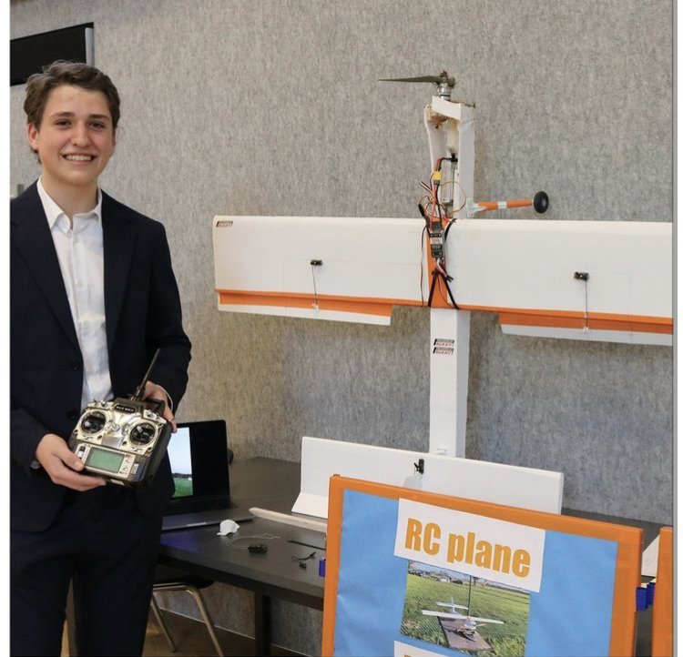
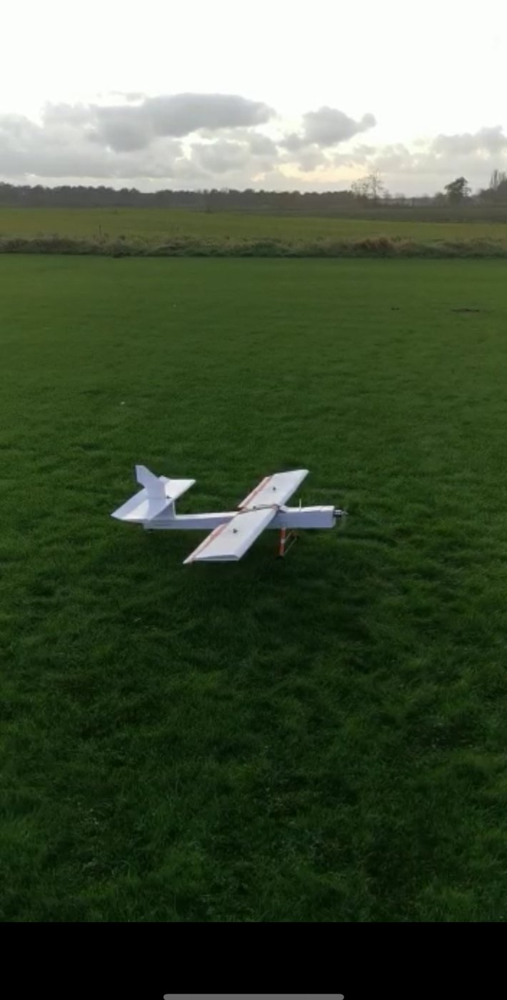
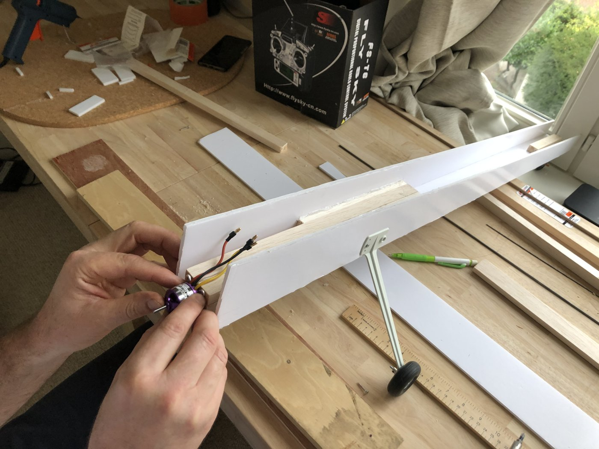
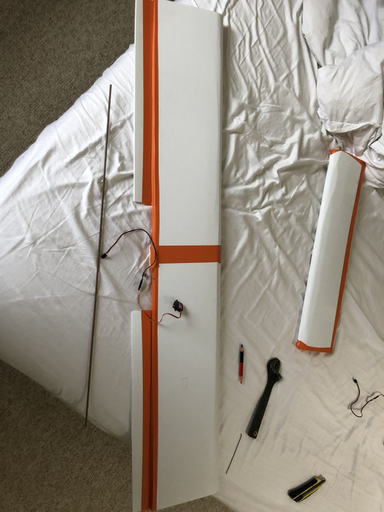
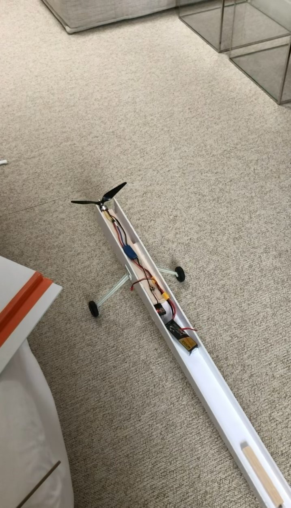
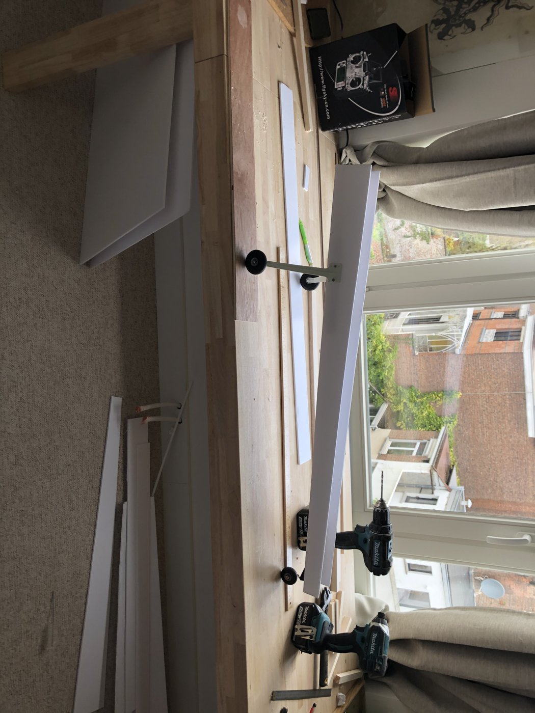
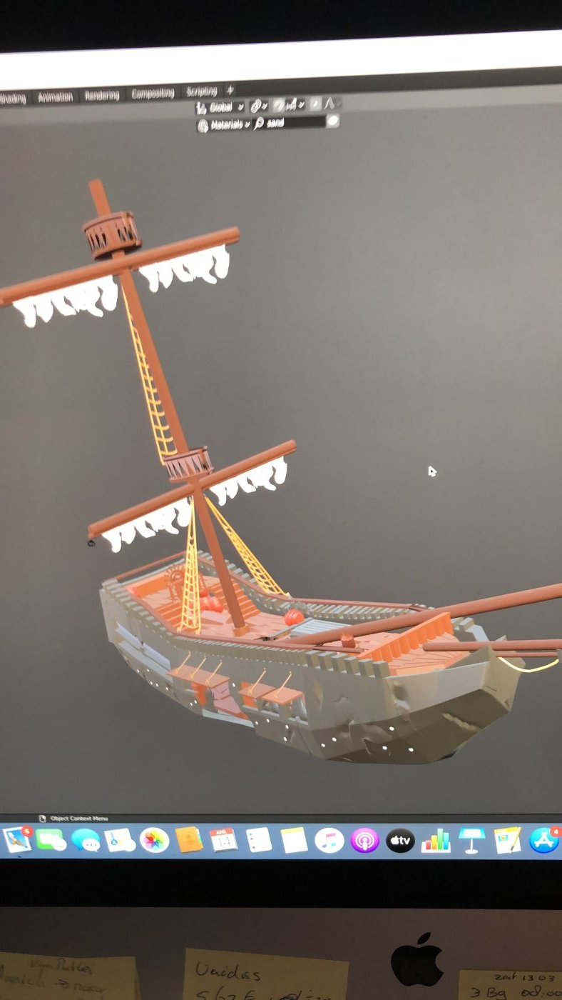
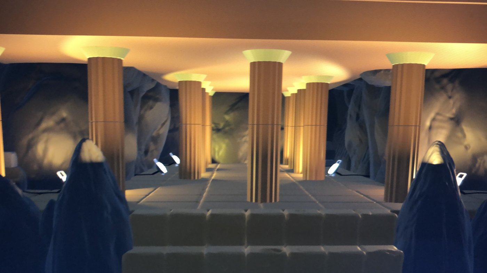
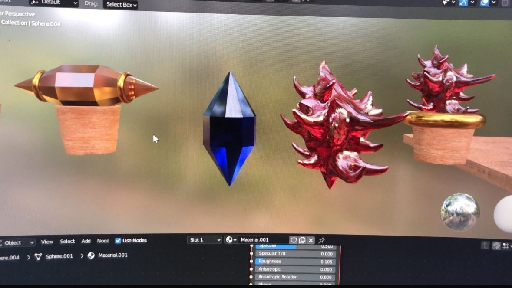
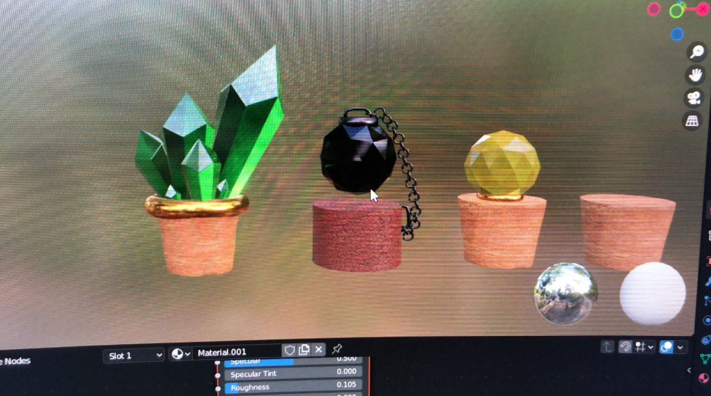

Arthy van Gastel
International Business student, ESEI Barcelona. I like building things by hand — from RC planes to 3D-printed designs — and I'm looking for a tech internship where I can learn something new.
I'm in my final year of an International Business degree, but most of what I've actually learned about building things came from projects outside the classroom — a scratch-built RC plane, 3D-printed designs that ended up for sale, and a multiplayer game built with two friends.
I'm currently completing a Claude AI training for professionals, and I'm looking to bring that same hands-on, figure-it-out approach into a tech internship — customer-facing or behind the scenes, I'm open to either.






- Airframe
- Styrofoam, balsa wood, glue
- Electronics
- Motor, ESC, servos, wiring
- Process
- No blueprint — trial and error
- Result
- Flew for 4 minutes
Designed and built an RC plane from scratch with no blueprint or assembly kit — airframe, electronics, and wiring all put together by hand. The flaps ended up too large, which made the plane catch too much wind and become overly sensitive to control. It flew for about four minutes before that instability caused it to crash. Rebuilding it taught me more about aerodynamics and iteration than the first version ever could have.

- Tools
- 3D modelling & printing
- Client
- Family fashion brand
- Outcome
- Produced and sold
Used 3D modelling skills to design prints for my mother's fashion brand. The designs were produced and sold — the first time one of my technical projects turned into something with a real, paying outcome.




- Team
- 3 students
- Type
- Multiplayer action game
- Status
- Playable, unreleased
Co-developed an online multiplayer action game with two other students, modelling the ships, structures, environments, and items myself. We got as far as running our own server and playing together over it — a real working multiplayer setup — before the project was shelved and never formally published. Even unfinished, it was the first time I helped build something interactive that other people could actually play.